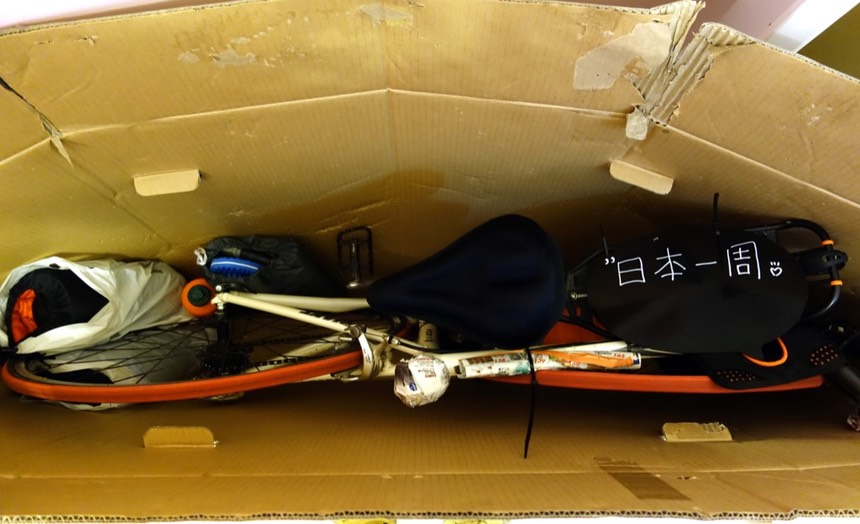
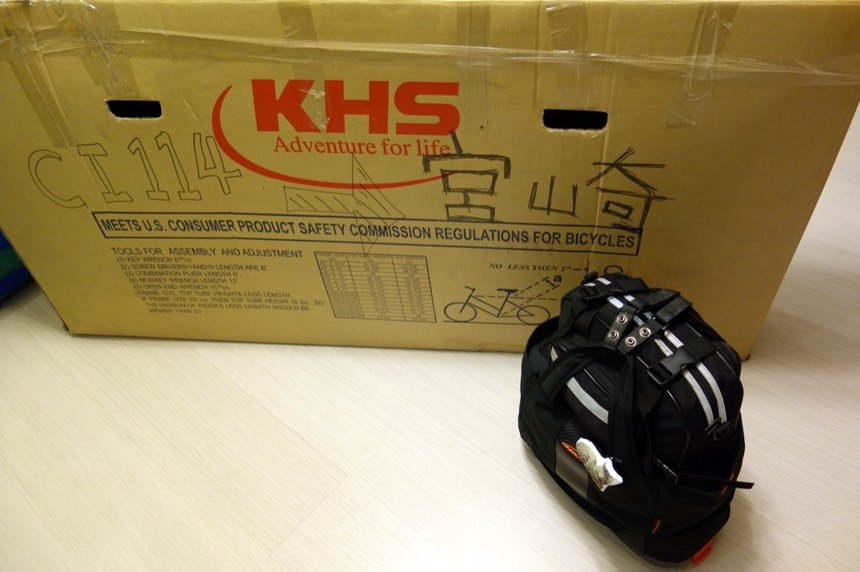

準備要出發了，真快呢～從提離職、決定去環日本，只花一個月的時間。
因為時間很趕，所以行程什麼的都沒有安排呀～～哈哈哈，該怎麼辦好 ∑(ι´Дン)ノ
前幾天最忙的時候不是在寫程式就是在寫遊記，總算兩個都告一段落，可以拍拍袖子。

腳踏車的踏板我很不會拆，所以每次裝箱都是連著踏板一起裝進去。（謝謝城市綠洲-三峽店的好心店員給我紙箱還有螺絲）
這次的行李超輕量，只靠一個保溫購物袋就裝滿家當了～這次的行李清單在這邊。而且會越來越輕喔～很多都是消耗品。
行李的總重量估計大約10公斤左右而已～ヽ(́◕◞౪◟◕‵)ﾉ 能不帶的就不帶，比如為了想省下一條lighting線，就去買了一個轉接頭。
這樣相機、行動電源跟iPhone可以共用一條USB線，因為日本補給很方便，所以水壺也只帶了兩個700cc的卡打車。
我要推薦一下這個運動飲料，2005年環法的時候，我帶的是健酪乳酸飲料，應該是600cc。之前去騎西藏，帶的是每朝綠茶650cc。
瘦瘦的水壺架放不下1公升胖胖水壺，問了店員水壺架能放的下的水壺最大容量是多少？結果也是600cc左右（而且還很貴！）
後來想到可以去買卡打車，一瓶29元，它的容量有700cc，而且瓶口很大，方便飲用，缺點大概就是不能裝熱水。外包裝的膠膜還可以撕掉。
本來沒有想要露營的，因為我沒有露營的裝備的說。
後來又去買了一組新的露營三寶：睡袋、睡墊、露宿袋（這次算四寶，我還自備枕頭）
還有12小時就要搭飛機出發了，久違的小緊張，但這次不會再吐了 ( ×ω× )

這次旅行有三個希望自己可以克服的障礙。
1. 希望我敢吃生雞蛋拌飯。
2. 希望我敢吃納豆。
3. 希望我敢吃生魚片。
都是跟吃有關的...我究竟出國騎車是為了什麼？ (๑´ڡ`๑)
老天爺保佑來個好天氣吧～
下一篇：3.2.1 出花